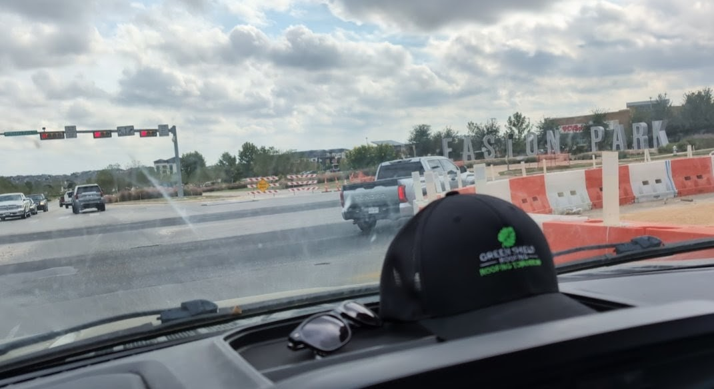

Roofing Experts for Easton Park Homes
One of our very favorite up-and-coming neighborhoods in all of Austin is Easton Park in South Austin! We have completed roof maintenance, leak repairs, and inspections for dozens of our neighbor's homes throughout Easton Park. Because the neighborhood was built in similar phases by the same builders, most homes share the same roof age, materials, and installation details.
That means we already know what to look for: aging pipe boots, builder-grade flashing, early shingle wear, ventilation issues, and leak points that are common throughout Easton Park homes as they reach this stage of their lifecycle.
Whether you're dealing with a small leak, preventative maintenance, or storm-related damage, our team brings neighborhood-specific expertise—not guesswork.
Schedule Your Easton Park ConsultationRoofing Services for Easton Park Homeowners
Residential Roofing
Specialized residential roofing services tailored to Easton Park homes, including asphalt shingle repair, upgrades, and full roof replacements.
Roof Maintenance & Preventative Care
Proactive roof maintenance programs designed to catch small issues early and extend the life of Easton Park roofs before costly damage occurs.
Leak Detection & Roof Repair
Fast, accurate leak detection and repair for common Easton Park problem areas such as roof penetrations, flashing, and ventilation components.
Storm & Hail Damage Repairs
Trusted roof repair services after Central Texas wind and hail events, including documentation and insurance claim support when needed.
Metal & Tile Roofing
Upgraded roofing options including stone coated steel, premium hail-resistant shingles, and synthetic roofing tiles for homeowners looking for long-term durability and energy efficiency.
Roof Replacement Planning
Honest guidance for Easton Park homeowners approaching replacement age— helping you plan ahead instead of reacting to emergencies.